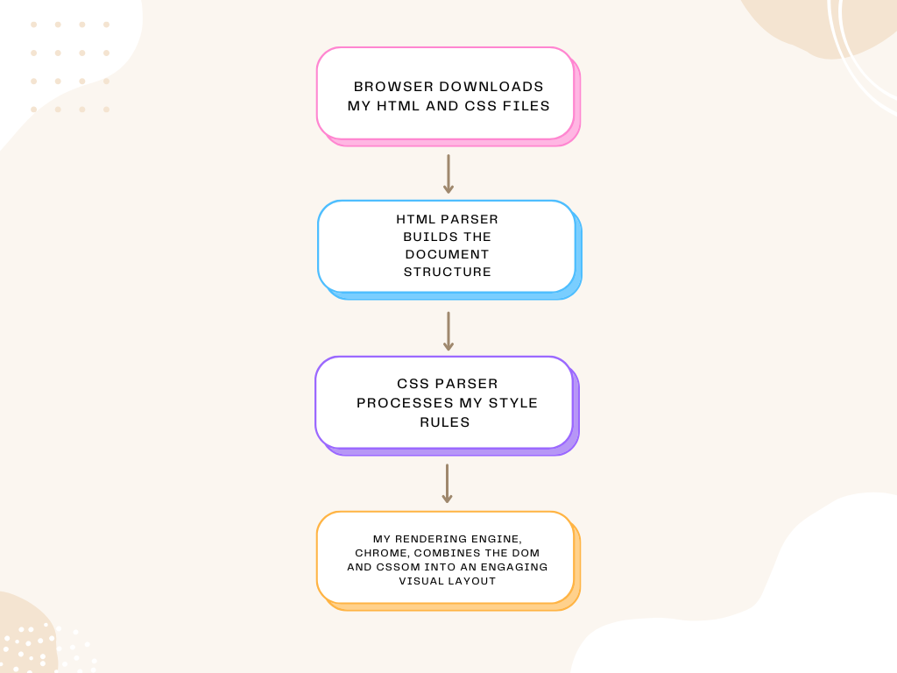

It was important to me to understand that HTML5 and CSS3 are declarative languages, and that my choice of browser engine interacts with the .html and .css files I created to render the content. Essentially, my files describe what is to be displayed, and the browser engine determines how to achieve it. Further, my four HTML files (index, past, future, comments) declare the document structure and content, and my CSS file (websystems.css) declares the style and layout of the webpages.
I used W3Schools as a resource to develop my understanding of HTML/CSS and grasped that I can build a beautiful website using these tools only.
For overall context, I delved into how browser engines such as Blink for Chrome, and WebKit for Safari implement HTML and CSS and created the following flowchart using Canva to demonstrate the process.
Throughout my coding journey I've encountered a fundamental programming paradigm, the "separation of concerns principle", that divides responsibilities and indeed this principle applies to HTML5 structure and CSS3 style & layout.
The DOCTYPE declaration <!DOCTYPE html> at the start of my index.html file informs the browser to interpret the document as HTML5. The <html> element serves as the root container, containing the <head> element with metadata, links to external resources, and the webpage title Canine Poet.
The <body> element contains the main content, structurally organised into <header>, <section> and <footer>. Initially I started with a .wrapper class to organise the content, but after writing the comments.html page, I found that the content layout was in one block and difficult to read. I therefore introduced an additional grid layout using .bento-container and .bento-box and the layout improved significantly. I added a transparent background to the .bento-box and this allowed the underlying colour of the body to display but with a muted tone. I am pleased with the result.
It was important for me to understand that "cascading" in CSS3 refers to the hierarchy and flow of styles, encompassing how multiple style rules are applied, and how more specific style rules are given precedence over less specific style rules.
In my external stylesheet "websystems.css", linked through the <link> element in the head tag, the order of priority from lowest to highest is outlined below:
In this project I used element selectors to target all instances of an HTML tag, class selectors to apply reusable styles to multiple elements, ID selectors to target unique elements that appear only once per page, and additional CSS classes to style individual elements with specific needs.
From a personal perspective I endeavour to ensure my web apps are mobile responsive and as such I used the @media screen and (max-width: 400px) css rule to create a responsive layout for screens smaller than 400px, about the width of an iPhone 12 Pro.
| Purpose | Targeted HTML Tags | Type of Selector | Key CSS Attributes |
|---|---|---|---|
| Navigation between pages | <a> within <nav> | class selector .nav a and descendant selector with pseudoclass .nav a:hover | { color: #4f46e5; } |
| Navigation layout | <nav> | class selector .nav | { display: flex; } For a one-dimensional layout with nav items arranged in a row { justify-content: center; } Aligns the flex items at the center of the container |
| Horizontal image scroll | <div> container with <img> to embed image in HTML page with 2 required attributes: src, alt, and 2 recommended attributes: width, height | id selector #scroll-container | { overflow: auto; } Creates a horizontal scroll bar when images extend beyond container width { white-space: nowrap; } Prevents content from wrapping to new line |
| Maintain formatting of poems as typed | <pre> | element selector | Preserves white space and line breaks automatically |
| Organise data into a table | <table> <tr> <th> <td> | id selector #html-table | { width: 60%; } Constrains width of container { line-height: 1.6; } Increases space between lines to improve readability |
| Control width of content | <div> | class selector .wrapper | { max-width: 800px; } Sets maximum width of container. If content is larger than maximum width, it will automatically change the height of the element |
| Centre content within container | <div> | class selector .wrapper | { margin: 0 auto; } Sets left and right margins of content to auto calculated by browser { text-align: justify; } Stretches the lines so that each line has equal width |
| Body occupies 100% of viewport height and header and footer correctly positioned | <body> | element selector | { min-height: 100vh; } 100% of viewport { display: grid; } Body displays as a two-dimensional layout, with rows and columns. grid-template-rows: auto 1fr auto; Defines 3 horizontal rows for overall page layout |
| Define a padding (space) between text and border | <p> <h1> <h2> <h3> <footer> | element selector | { padding: 10px 0; } Denotes 10px top and bottom and 0 left and right |
| Define a margin (space) outside border | <p> | element selector | { margin: 0 auto; } Denotes top and bottom margins are 0, and left and right margins are equal, centering the element within its parent container |
| Hyperlinks to navigate between pages and navigate to different documents | <a> with href attribute to indicate link's destination specified by a relative URL or absolute URL | descendant selector with pseudo-class | :hover pseudo-class changes link colour on mouse hover a:hover { color: #4f46e5; } |
| Link to an email address | <a> use mailto: inside the href attribute to create a link that opens the user's email program | descendant selector with pseudo-class | :hover pseudo-class changes link colour on mouse hover a:hover { color: #4f46e5; } |
| blockquote | <blockquote> Specifies a section that is quoted from another source, and contains a metadata cite attribute to reference the source url, for browsers, and assistive technologies | element selector | { line-height: 1.6; } Sets the vertical spacing between lines of text |
| Emphasise text | <em> Typically displayed in italic. A screen reader will pronounce the words with an emphasis, using verbal stress. | element selector |
I created Madame Tao as my alias and literary persona. I made design choices that enhance the original poems written by me, and used the <pre> tag to preserve whitespace in the poems and emulate a poetry website.
I selected a harmonious pastel colour scheme: #D9ACF5 for the body background, #FFCEFE to distinguish <nav> and <footer> elements, and #4f46e5 for hover states and accents. I used a transparent background rgba(255, 255, 255, 0.1); for the .bento-box to allow the colour of the body to display through a frosted appearance, whilst maintaining sufficient contrast for readability.
The primary typeface is Cupidus-Extralight, an elegant custom font that I purchased. I implemented a font-stack with Helvetica and sans-serif as fallbacks to ensure readability across different devices. I used viewport units (vh) for responsive scaling of font-size, with clear hierarchy:
As mentioned earlier I started with an element selector to target <body> with the attributes display: grid; grid-template-rows: auto 1fr auto; to create 3 rows and a sticky header and footer. I progressed to a simple .wrapper class to constrain the content, with max-width: 800px; for optimal reading line length, but found that the content in the comments.html page was too extensive and complex to work with this layout approach. I therefore added a more sophisticated grid pattern using .bento-container with two columns (2fr 1fr) and four auto-sizing rows, within which I placed my bento-boxes. Each bento-box was styled with a transparent background, a border, and curved corners. I subsequently re-used the bento-boxes throughout the webpages because it looked so good. Within the @media screen and (max-width: 400px), I modified the .bento-container to one column and revised the .bento-box grid-area positioning to ensure readability for iPhone 12 Pro. The horizontal image gallery uses a scrollable container that allows users to browse photos while maintaining page flow.
My images include correct alt attributes for screen reader accessibility. The photo gallery images use alt="dog" providing descriptive content for visually impaired users. The flowchart image uses alt="flowchart diagram" clearly identifying its purpose. These descriptions ensure the website content remains meaningful when images cannot be displayed or accessed.
When CSS is disabled (testable using Firefox's Web Developer Tools), the website maintains full functionality and readability. The semantic HTML structure ensures content flows logically: navigation links remain functional, headings provide clear hierarchy, paragraphs maintain readability, and the table presents data in an organised format. The use of semantic elements like <nav>, <section>, and <footer> provides meaning even without visual styling.